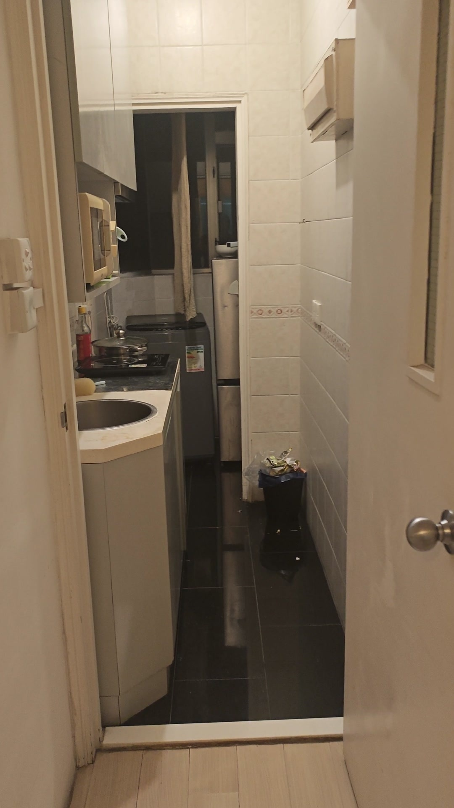

From a photo
to the next step.
Explore the original photos, computed poses and saved route from one successful application run.
Unable to load the saved case. Please reload, or use the technical video.

Model-space route
Schematic projection of the actual model coordinates. Scale is uncalibrated; this is not the old floor-plan overlay.
Browsing changes the displayed record, not the user’s location.
Inspect the evidence behind this stage
What this journey shows
Two successful photo registrations, a saved route and an arrival match, taken from the same application session. The straight-ahead arrow belongs to the first photo’s view; the destination marker belongs to the second.
The images are registered mapping-photo replays, rather than an independent walking trial. Guidance uses static photo overlays and a candidate navigation graph. Physical distances and field passability remain to be checked.